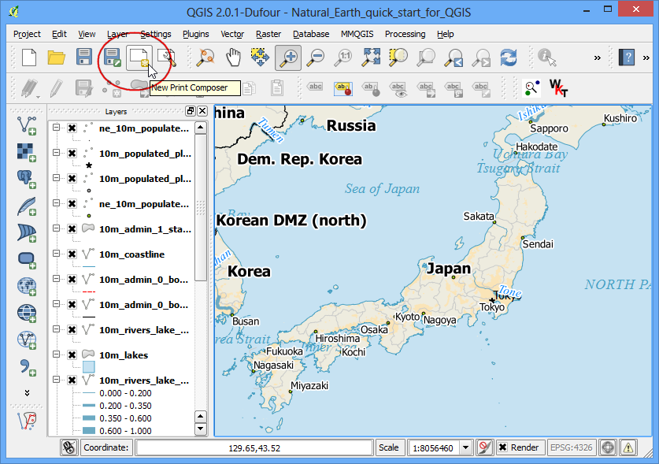
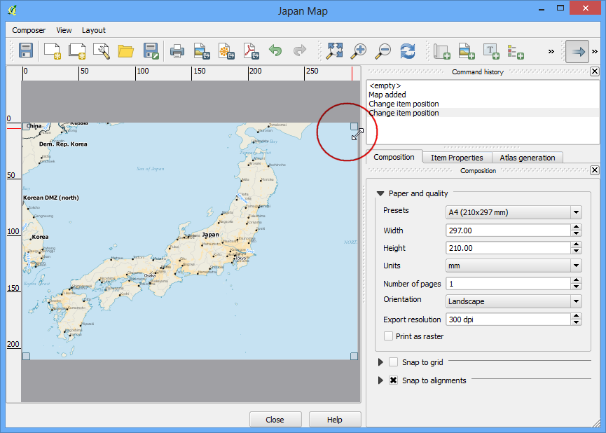
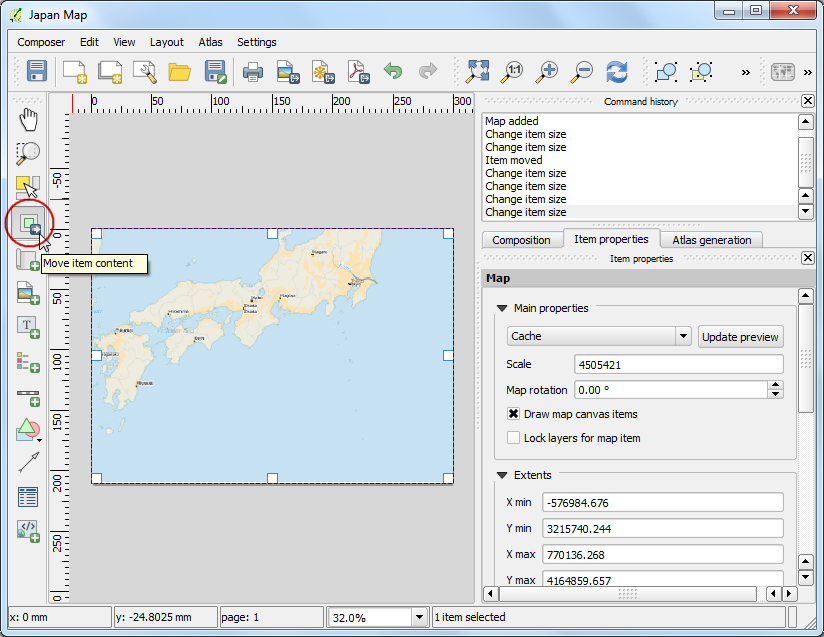
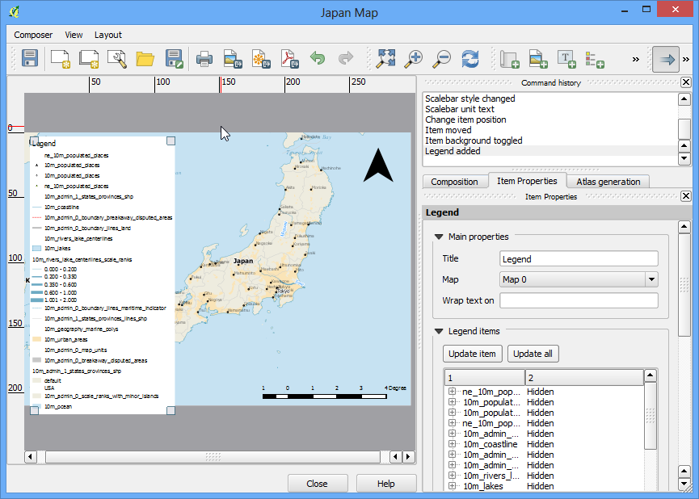

Crearea unei hărți
[ Download PDF A4 Letter ]
De multe ori este necesară crearea unei hărți, care să poată fi imprimată sau publicată. QGIS deține un instrument puternic, denumit Compozitorul de hărți, care vă permite să luați straturile GIS și să le împachetați pentru a crea hărți.
Privire de ansamblu asupra activității
Tutorialul vă arată cum să creați o hartă a Japoniei, decorată cu elemente standard pentru hărți, cum ar fi săgeata nordului, scara, legenda și eticheta.
Obținerea datelor
Vom folosi setul de date Natural Earth - în special Natural Earth Quick Start Kit, care vine cu straturi globale, frumos stilizate, și care pot fi încărcate direct în QGIS.
Descărcați Natural Earth Quickstart Kit.
Sursa de date [NATURALEARTH]
Procedura
Descărcați și extrageți datele Natural Earth Quick Start Kit. Deschideți QGIS. Faceți clic pe .

Răsfoiți directorul în care ați extras datele Natural Earth. Ar trebui să vedeți un fișier numit Natural_Earth_quick_start_for_QGIS.qgs. Acesta este fișierul proiect, care conține straturi stilizate, în formate specifice QGIS. Clic pe Open.

În interiorul cuprinsului, vor apărea o mulțime de straturi, iar pe suportul de prezentare al QGIS va fi expusă o hartă stilizată a lumii. Dacă observați erori în partea de sus a ferestrei, faceți clic pe butonul de închidere.

În acest tutorial, vom elabora o hartă a Japoniei. Faceți clic pe butonul Zoom In și desenați un dreptunghi în jurul Japoniei, pentru a mări zona respectivă.

O dată ce ați centrat zona de interes, faceți clic pe butonul New Print Composer. Același lucru s-ar fi putut face, selectând .

Vi se va solicita titlul compoziției. Introduceți ‘Japan map’, apoi faceți clic pe Ok.

În fereastra Compozitorului de Hărți, faceți clic pe Zoom full pentru a încadra corespunzător suprafața compoziției în interiorul ferestrei.

Va trebui să aducem o vedere a hărții care se observă pe suportul de prezentare al QGIS. Apăsați pe butonul Add Map. Același instrument poate fi accesat prin selectarea .

O dată ce Add Map s-a activat, țineți apăsat butonul stâng al mouse-ului și glisați, pentru a se desena un dreptunghi în zona în care se dorește inserarea hărții.

Veți vedea că aria dreptunghiului se va umple cu harta de pe suportul de prezentare al QGIS . Din moment ce dorim ca harta să acopere pagina în totalitate, vom trage de colțurile dreptunghiului, înspre margini.

Haideți să reglăm nivelul de mărire pentru harta respectivă. Accesați fila Item Properties, apoi introduceți valoarea 3500000 în câmpul Scale.

Urmează adăugarea pe hartă a unei săgeți a nordului. Compozitorul de Hărți vine cu o frumoasă colecție de imagini caracteristice hărților - inclusiv multe tipuri de săgeți ale nordului. Clic pe .

Ținând apăsat butonul stâng al mouse-ului, glisați, pentru a se materializa un dreptunghi în colțul din dreapta-sus al hărții.

Pe panoul din dreapta, faceți clic pe fila Item Properties, apoi expandați secțiunea Search directories, după care, selectați imaginea preferată a Săgeții Nordului.

Mai departe, derulați în jos și debifați opțiunea Background. Acest lucru va face imaginea transparentă.

Urmează adăugarea unui indicator de scară. Faceți clic pe .

Faceți clic în locul unde doriți să apară indicatorul scării. În fila Item Properties, alegeți stilul care se potrivește cerințelor dvs. De asemenea, schimbați unitățile pentru a fi Map units și etichetați-le ca ‘Degree’, deoarece unitățile hărții sunt date în grade. Ar trebui să setați transparența, de asemenea, prin debifarea opțiunii Background.

Urmează adăugarea unui indicator de scară. Faceți clic pe .

Efectuați clic în locul în care doriți să apară legenda. Deoarece avem multe straturi, le veți vedea enumerate într-o casetă pe măsură.

În fila Item Properties selectați straturile pe care nu le doriți în legendă. Apăsați pe butonul - pentru a le elimina din legendă.

În interesul acestei hărți, vom păstra în legendă informații doar pentru cele cinci straturi, așa cum se vede mai jos. Apăsați pe butonul Edit și schimbați aspectul textului pentru elementele de legendă, pentru a le face mai ușor de citit.

Acum, este momentul etichetării hărții. Faceți clic pe .

Faceți clic pe hartă și desenați o casetă, în care trebuie să apară eticheta. În fila Item Properties expandați secțiunea Label și introduceți textul. La fel de bine, putem introduce text în format HTML. Bifați opțiunea Render as Html, astfel încât Compozitorul să poată interpreta tag-urile HTML.

O dată ce sunteți mulțumiți de hartă, o puteți exporta sub formă de imagine, PDF sau SVG. În acest tutorial, o vom exporta ca imagine.

Salvați imaginea într-un format care este pe placul dumneavoastră. Mai jos, imaginea este exportată ca PNG.